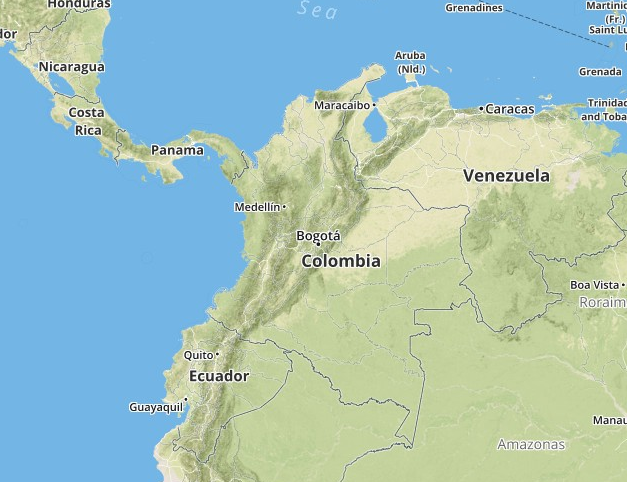

Mapbox
Crop Climate Effects Climate Global Food Production
Crop Climate Effects Climate Global Food Production of RICE
Calendario Agricola
Temperatura en los años de mayor rendimiento
Pronostico del clima prox. 10 días
Previous
Next